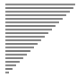

内排序算法
插入排序
直接插入排序
| 算法 | 完全随机 | 基本有序 | 逆排序 | 少有不同 |
| 插入排序 |

|
- 稳定
- 空间复杂度：
- 时间复杂度：
- 序列完全正序：仅需比较次
- 序列完全逆序：比较次、移动次
- 序列基本有序：
- 适应性：随着排序的的进行，序列变得基本有序，算法效率逐渐提高。
//! 直接插入排序（升序） void directInsertSort(int arr[], int len) { for (int i = 1; i < len; i++) { int j = i - 1; int v = arr[i]; while (j >= 0 && v < arr[j]) { arr[j + 1] = arr[j]; j--; } arr[j + 1] = v; } }
输入 A, N
循环 i ∈ [1, N - 1]
j = i - 1, v = A[i]
循环当 j ≥ 0 且 v < A[j]
A[j + 1] = A[j]
j--
A[j + 1] = v
折半插入排序
//! 折半插入排序（升序） void binaryInsertSort(int arr[], int len) { for (int i = 1; i < len; i++) { int l = 0, m, r = i - 1, v = arr[i]; // 二分查找探测右边界 while (l <= r) { m = (l + r) / 2; if (arr[m] <= v) { l = m + 1; } else { r = m - 1; } } // 插入位置为(r+1) int j = i - 1; while (j > r) { arr[j + 1] = arr[j]; j--; } arr[j + 1] = v; } }
输入 A, N
循环 i ∈ [1, N-1]
l = 0, r = i - 1, v = A[i]
循环当 l ≤ r
m = (l + r) / 2
若 A[m] <= v 则 l = m + 1 否则 r = m - 1
j = i - 1
循环当 j > r
A[j + 1] = A[j]
j--
A[j + 1] = v
希尔排序
| 算法 | 完全随机 | 基本有序 | 逆排序 | 少有不同 |
| 希尔排序 |

|
- 不稳定
- 空间复杂度：
- 大概时间复杂度：（由于数学问题，无法准确描述）
- 适应性：由于希尔排序基于插入排序，希尔排序继承了插入排序的自适应性，但适应性较直接插入排序弱。
//! 希尔排序（升序） void shellInsertionSort(int arr[], int len) { for (int step = len / 2; step > 0; step /= 2) { for (int i = step; i < len; i++) { int j = i, k = j - step, dump = arr[j]; // 直接插入排序 while (k >= 0 && arr[k] > dump) { arr[j] = arr[k]; j = k; k = j - step; } arr[j] = dump; } } }
选择排序
简单选择排序
在交换单位的消耗成本很高的应用中，选择排序很可能也是合适的算法选择。
| 算法 | 完全随机 | 基本有序 | 逆排序 | 少有不同 |
| 选择排序 |

|
- 不稳定
- 空间复杂度：
- 时间复杂度：
- 不适应性
//! 简单选择排序（升序） void simpleSelectSort(int arr[], int len) { for (int i = 0; i < len; i++) { // 获取[i, len - 1]中的最小值 int m = i; for (int j = i + 1; j < len; j++) { if (arr[j] < arr[m]) m = j; } swapValue(arr, m, i); } }
输入 A, N
循环 i ∈ [0, N - 1]
m = i
循环 j ∈ [i + 1, N - 1]
若 A[j] < A[m] 则 m = j
交换 A[i], A[m] 的值
堆排序
| 算法 | 完全随机 | 基本有序 | 逆排序 | 少有不同 |
| 堆排序 |

|
- 不稳定
- 空间复杂度：
- 时间复杂度：
- 没有真正适应
//! 构建大顶堆 void heapAdjust(int arr[], int len, int i) { // i为被调整节点 int iL = 2 * i + 1; // i 的左子节点 int iR = 2 * i + 2; // i 的右子节点 // 选出当前结点与其子结点中最大的结点记为j int j = i; if (iL < len && arr[iL] > arr[j]) j = iL; if (iR < len && arr[iR] > arr[j]) j = iR; // 最大结点交换到当前根，并传递调整 if (j != i) { swapValue(arr, j, i); heapAdjust(arr, len, j); } } //! 堆排序（升序） void heapSelectSort(int arr[], int len) { // 【构建大顶堆】 // 所有非叶节点：[0, len / 2 - 1] for (int i = len / 2 - 1; i >= 0; i--) heapAdjust(arr, len, i); // 【调整大顶堆】 for (int i = len - 1; i >= 1; i--) { swapValue(arr, i, 0); // 将当前最大的放置到数组末尾 heapAdjust(arr, i, 0); // 将未完成排序的部分继续进行堆排序 } }
输入 A, N
循环 i ∈ [N/2 - 1, 0]
heapAdjust(A, N, i)
循环 i ∈ [N - 1, 1]
交换 A[i], A[0] 的值
heapAdjust(A, i, 0)
heapAdjust:
输入 A, N, I
l = 2 × I + 1
r = 2 × I + 2
j = I
若 l < N 且 A[l] > A[j] 则 j = l
若 r < N 且 A[r] > A[j] 则 j = r
若 j ≠ I 则
交换 A[j], A[I] 的值
heapAdjust(A, N, j)
ArrayToHeap
- 非叶序区间：
- 叶子序区间：
int A[] = {?, ?, ?, ?, ?, ?, ?, ?}; // I = {0, 1, 2, 3, 4, 5, 6, 7}; // L = 8;
graph TB
style A0 fill:#CC9933;
style A1 fill:#CC9933;
style A2 fill:#CC9933;
style A3 fill:#CC9933;
style A4 fill:#99FF99;
style A5 fill:#99FF99;
style A6 fill:#99FF99;
style A7 fill:#99FF99;
style NIL_A3_R color:white,stroke:#aaa,fill:#aaa;
style NIL_A4_L color:white,stroke:#aaa,fill:#aaa;
style NIL_A4_R color:white,stroke:#aaa,fill:#aaa;
style NIL_A5_L color:white,stroke:#aaa,fill:#aaa;
style NIL_A5_R color:white,stroke:#aaa,fill:#aaa;
style NIL_A6_L color:white,stroke:#aaa,fill:#aaa;
style NIL_A6_R color:white,stroke:#aaa,fill:#aaa;
A0(("A[0]"));
A1(("A[1]"));
A2(("A[2]"));
A3(("A[3]"));
A4(("A[4]"));
A5(("A[5]"));
A6(("A[6]"));
A7(("A[7]"));
A0---A1; A0---A2;
A1---A3; A1---A4;
A2---A5; A2---A6;
A3---A7; A3---NIL_A3_R(("NIL"));
A4---NIL_A4_L(("NIL")); A4---NIL_A4_R(("NIL"));
A5---NIL_A5_L(("NIL")); A5---NIL_A5_R(("NIL"));
A6---NIL_A6_L(("NIL")); A6---NIL_A6_R(("NIL"));
HeapAdjust
int A[] = {49, 38, 13, 49, 76, 65, 27, 97}; // 构建大顶堆后 int R[] = {97, 76, 65, 49, 49, 13, 27, 38};
- 当前调整节点、被传递调整的节点、栈顶最值、取代栈顶的元素、冻结
graph TD
subgraph 2
style 2 stroke:#333,stroke-width:2px,fill:grey;
style B2 fill:yellow;
style D2 fill:orange;
A2((49));
B2((38));
C2((65));
D2((97));
E2((76));
F2((13));
G2((27));
H2((49));
A2---B2; A2---C2;
B2-.-D2; B2---E2;
C2---F2; C2---G2;
D2-.-H2;
end
subgraph 1
style 1 stroke:#333,stroke-width:2px,fill:grey;
style C1 fill:yellow;
A1((49));
B1((38));
C1((13));
D1((97));
E1((76));
F1((65));
G1((27));
H1((49));
A1---B1; A1---C1;
B1---D1; B1---E1;
C1-.-F1; C1---G1;
D1---H1;
end
subgraph 0
style 0 stroke:#333,stroke-width:2px,fill:grey;
style D0 fill:yellow;
A0((49));
B0((38));
C0((13));
D0((49));
E0((76));
F0((65));
G0((27));
H0((97));
A0---B0; A0---C0;
B0---D0; B0---E0;
C0---F0; C0---G0;
D0-.-H0;
end
graph TD
subgraph 5
style 5 stroke:#333,stroke-width:2px,fill:grey;
style H5 fill:red;
style A5 fill:yellow;
A5((38));
B5((76));
C5((65));
D5((49));
E5((49));
F5((13));
G5((27));
H5((97));
A5-.-B5; A5---C5;
B5-.-D5; B5---E5;
C5---F5; C5---G5;
D5---H5;
end
subgraph 4
style 4 stroke:#333,stroke-width:2px,fill:grey;
style A4 fill:pink;
style H4 fill:lightgreen;
A4((97));
B4((76));
C4((65));
D4((49));
E4((49));
F4((13));
G4((27));
H4((38));
A4---B4; A4---C4;
B4---D4; B4---E4;
C4---F4; C4---G4;
D4---H4;
end
subgraph 3
style 3 stroke:#333,stroke-width:2px,fill:grey;
style A3 fill:yellow;
style B3 fill:orange;
A3((49));
B3((97));
C3((65));
D3((49));
E3((76));
F3((13));
G3((27));
H3((38));
A3-.-B3; A3---C3;
B3---D3; B3-.-E3;
C3---F3; C3---G3;
D3---H3;
end
- 0-4为构建大顶堆（需要从最后一个非叶结点到根结点进行
HeapAdjust）； - 4为构建大顶堆的结果；
- 从4开始为选择最大值排序，后续每次仅需对根节点进行
HeapAdjust即可。
交换排序
冒泡排序
| 算法 | 完全随机 | 基本有序 | 逆排序 | 少有不同 |
| 冒泡排序 |

|

|

|
- 稳定
- 空间复杂度：
- 时间复杂的：
- 基本有序：
- 适应性
//! 冒泡排序（升序） void bubbleSwapSort(int arr[], int len) { // [0 →i→ (len-1)] for (int i = 0; i < len; i++) { // [(i+1) ←j← (len-1)] 每次从[i, len-1]中冒泡出一个最小值保存到i的位置 for (int j = len - 1; j > i; j--) { if (arr[j - 1] > arr[j]) { swapValue(arr, j - 1, j); } } } }
输入 A, N
循环 i ∈ [0, N - 1]
循环 j ∈ [N - 1, i)
若 A[j - 1] > A[j] 则 交换 A[j - 1], A[j] 的值
快速排序
通过一趟排序将要排序的数据分割成独立的两部分，其中一部分的所有数据都比另外一部分的所有数据都要小。
| 算法 | 完全随机 | 基本有序 | 逆排序 | 少有不同 |
| 快速排序 |  |

|
- 不稳定
- 空间复杂度：
- 时间复杂度：，但通常
- 没有真正适应
static void arrayAdjustL(int arr[], int boundL, int boundR) { int l = boundL; int r = boundR; int v = arr[l]; while (l < r) { // 期望右侧数据大于等于中间数 while (l < r && arr[r] >= v) r--; arr[l] = arr[r]; // 期望左侧数据小于等于中间数 while (l < r && arr[l] <= v) l++; arr[r] = arr[l]; } arr[l] = v; if (boundL < (l - 1)) arrayAdjustL(arr, boundL, l - 1); if ((l + 1) < boundR) arrayAdjustL(arr, l + 1, boundR); } //! 快速排序（升序） void quickSwapSort(int arr[], int len) { if (len > 1) arrayAdjustL(arr, 0, len - 1); }
输入 A, N
若 N > 1 则 arrayAdjust(A, 0, N - 1)
arrayAdjust:
输入 A, L, R
l = L, r = R, v = A[l]
循环当 l < r
循环当 l < r 且 A[r] ≥ A[p]
r--
A[l] = A[r]
循环当 l < r 且 A[l] ≤ A[p]
l++
A[r] = A[l]
A[l] = v
若 L < (l - 1) 则 arrayAdjust(A, L, l - 1)
若 (l + 1) < R 则 arrayAdjust(A, l + 1, R)
ArrayAdjustR
- 、、、临时锁定、最终命中、锁定
graph LR
subgraph 6
style 6 stroke:#333,fill:grey;
style D6 fill:red;
A6((5))---
B6((2))---
C6((4))---
D6((7))---
E6((9))---
F6((8));
end
subgraph 5
style 5 stroke:#333,fill:grey;
style F5 fill:skyblue;
style D5 fill:lightgreen;
A5((5))---
B5((2))---
C5((4))---
D5((8))---
E5((9))---
F5((7));
end
subgraph 4
style 4 stroke:#333,fill:grey;
style F4 fill:skyblue;
style C4 fill:yellow;
style D4 fill:orange;
A4((5))---
B4((2))---
C4((4))---
D4((8))---
E4((9))---
F4((7));
end
subgraph 3
style 3 stroke:#333,fill:grey;
style F3 fill:skyblue;
style B3 fill:yellow;
style D3 fill:orange;
A3((5))---
B3((2))---
C3((4))---
D3((8))---
E3((9))---
F3((7));
end
subgraph 2
style 2 stroke:#333,fill:grey;
style F2 fill:skyblue;
style B2 fill:yellow,stroke:hotpink,stroke-width:5px;
style D2 fill:orange,stroke:hotpink,stroke-width:5px;
A2((5))---
B2((8))---
C2((4))---
D2((2))---
E2((9))---
F2((7));
end
subgraph 1
style 1 stroke:#333,fill:grey;
style F1 fill:skyblue;
style B1 fill:yellow,stroke:hotpink,stroke-width:5px;
style E1 fill:orange;
A1((5))---
B1((8))---
C1((4))---
D1((2))---
E1((9))---
F1((7));
end
subgraph 0
style 0 stroke:#333,fill:grey;
style F0 fill:skyblue;
style A0 fill:yellow;
style E0 fill:orange;
A0((5))---
B0((8))---
C0((4))---
D0((2))---
E0((9))---
F0((7));
end
- 注意在5中，如果是大于最终命中值的话是不需要交换的，此时锁定的是其原始所在位置。
ArrayAdjustL
- 、、、临时锁定、最终命中、锁定
graph LR
subgraph 5
style 5 stroke:#333,fill:grey;
style C5 fill:red;
A5((2))---
B5((4))---
C5((5))---
D5((8))---
E5((9))---
F5((7));
end
subgraph 4
style 4 stroke:#333,fill:grey;
style C4 fill:lightgreen;
A4((2))---
B4((4))---
C4((?))---
D4((8))---
E4((9))---
F4((7));
end
subgraph 3
style 3 stroke:#333,fill:grey;
style B3 fill:yellow;
style C3 fill:orange,stroke:hotpink,stroke-width:5px;
A3((2))---
B3((?))---
C3((4))---
D3((8))---
E3((9))---
F3((7));
end
subgraph 2
style 2 stroke:#333,fill:grey;
style B2 fill:yellow,stroke:hotpink,stroke-width:5px;
style D2 fill:orange;
A2((2))---
B2((8))---
C2((4))---
D2((?))---
E2((9))---
F2((7));
end
subgraph 1
style 1 stroke:#333,fill:grey;
style A1 fill:yellow;
style D1 fill:orange,stroke:hotpink,stroke-width:5px;
A1((?))---
B1((8))---
C1((4))---
D1((2))---
E1((9))---
F1((7));
end
subgraph 0
style 0 stroke:#333,fill:grey;
style A0 fill:yellow,stroke:skyblue,stroke-width:5px;
style F0 fill:orange;
A0((5))---
B0((8))---
C0((4))---
D0((2))---
E0((9))---
F0((7));
end
快速排序三平均
| 算法 | 完全随机 | 基本有序 | 逆排序 | 少有不同 |
| 快速排序三平均 |

|
- 不稳定
- 空间复杂度：
- 时间复杂度：，但通常
- 自适应：当有个Unique Keys时需要时间
归并排序
| 算法 | 完全随机 | 基本有序 | 逆排序 | 少有不同 |
| 归并排序 |

|
- 稳定性
- 数组要额外空间；链表要额外空间
- 时间
- 不自适应
- 不需要随机接入数据
基数排序
略